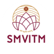

Founded in 2010 by H. H. Shri Vishwavallabha Theertha Swamiji of Shri Sode Vadiraja Mutt – one of the 700 plus years old Ashta Mutts associated with the world famous Shri Krishna temple o f Udupi in Karnataka – Shri MadhwaVadiraja Institute of Technology & Management (SMVITM), situated at Bantakal in Udupi has carved a niche for itself in imparting quality engineering education in the coastal Karnataka region.
Register Now Contact Us